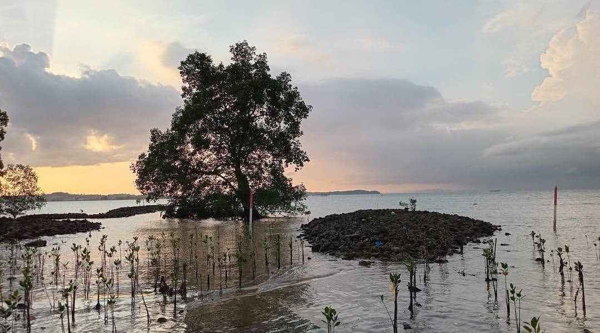
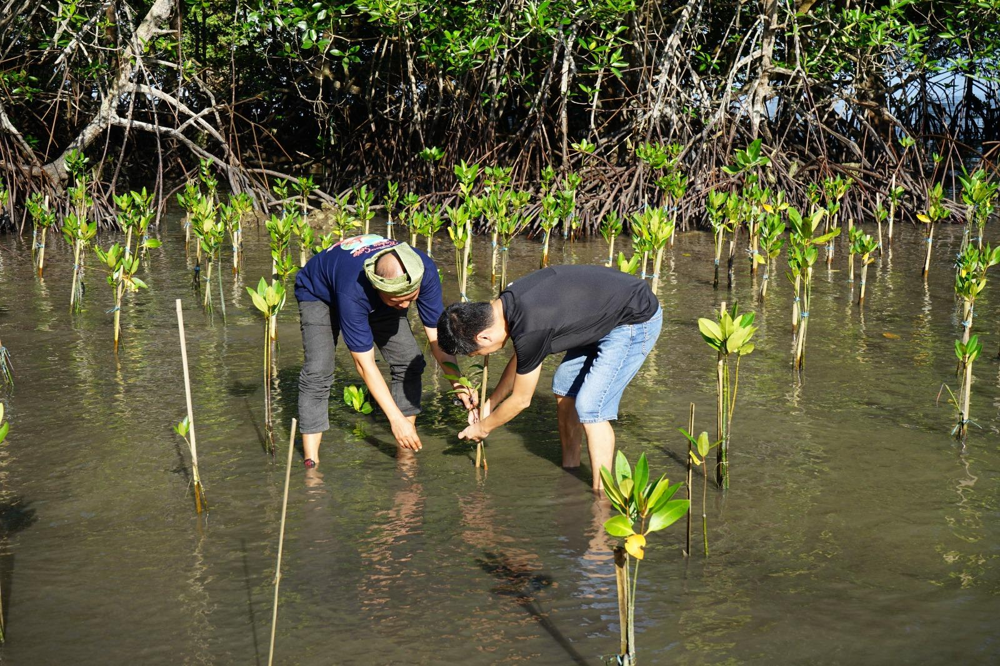

24 Desember 2025

Halo Sobat Mangrove!🌱 Kamu tau nggak sih, ada spot hidden gem di pesisir pantai yang suasananya adem banget? Namanya Ekowisata Mangrove Pandang Tak Jemu, tempat yang siap manjain mata dan bikin kamu ngerasa damai cuma dengan jalan pelan sambil nikmatin view-nya. Sepanjang kamu jalan di jembatan kayu, deretan pohon bakau bakal nemenin, ngasih suasana sejuk dan tenang yang susah banget didapetin di kota. Bagi para wisatawan yang ingin merasakan udara segar dengan semilir angin yang sejuk, Ekowisata Mangrove Pandang Tak Jemu menawarkan pengalamam wisata yang autentik dan menenangkan. Desa ini menawarkan pemandangan alam dimana wisatawan dapat melihat langsung laut lepas di depan mata dan mampu melihat negara Seberang seperti Singapura. Permukaan yang dekat dengan Pantai mampu memberikan wisatawan pengalaman merasakan air pantai dan menangkap kepiting kecil. Nggak cuma nyuguhin pemandangan yang bikin mata adem, di sini kamu juga bisa ikut kegiatan seru nan bermakna kayak menanam pohon mangrove lho!🌿 Kegiatan ini jadi cara asik buat berkontribusi langsung menjaga alam kecil tapi berdampak besar.

Setiap kunjungan ke Ekowisata Mangrove Pandang Tak Jemu bukan cuma sekadar jalan-jalan, tapi juga momen buat nyatu sama alam dan nemuin ketenangan versi kamu sendiri. Yuk, main ke Ekowisata Mangrove Pandang Tak Jemu!🏝️ Di sini, kamu nggak cuma bakal lihat pemandangan yang indah, tapi juga ngerasain suasana alam yang bikin hati adem dan pikiran langsung refresh!😌